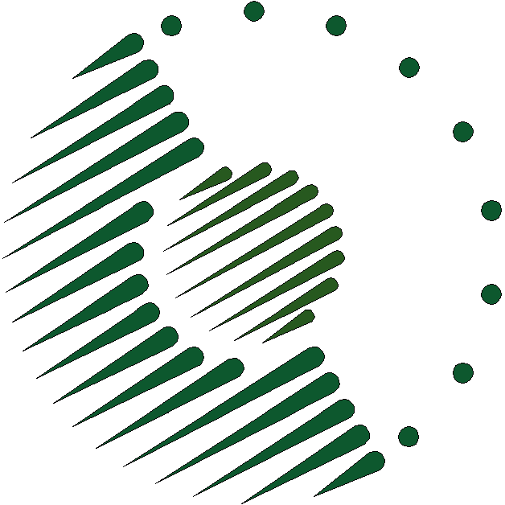

Sparqlification Mapping Language
A language to map relational data to RDF
Tools and Specs
| Description | Links | |
|---|---|---|
|
|
Sparqlification Mapping Language: This document describes the Sparqlification Mapping Language (SML), a language to express custom mapping rules betweem relational data and RDF. This specification introduces the basic SML terminology and describes the structure of SML mappings and its components. | Specification |
|
|
SML Syntax Highlighting Plugin for CodeMirror Edit SML conveniently in the browser with this colorful plugin. As a developer you can install it using bower install sml-codemirror-mode. |
Demo |
|
|
R2RML Converters: Tools to convert SML mappings to R2RML and vice versa. | Source Code |
|
|
Vim Syntax Highlighting for SML:
Vim is a powerful and highly configurable editor.
Vim is free software and part of all mainstream Linux distributions but also available for other platforms.
The syntax highlighting definitions just have to be copied to the .vim/syntax/ directory of your home directory.
After adding the following lines to your vimrc file, the syntax highlighting is applied automatically when files with the extensions '.sparqlify' or '.sml' are opened:
au BufNewFile,BufRead *.sparqlify setfiletype sml au BufNewFile,BufRead *.sml setfiletype smlAlternatively, you can enable the highlighting explicitly, typing set syntax=sml in Vim's execution mode.
|
Source Code |
|
|
SML in use @ LinkedGeoData: LinkedGeoData is an effort to add a spatial dimension to the Web of Data / Semantic Web. LinkedGeoData uses the information collected by the OpenStreetMap project and makes it available as an RDF knowledge base according to the Linked Data principles. It interlinks this data with other knowledge bases in the Linking Open Data initiative. | Website SML Mapping File |
|

|
SML in use @ PanLex: Every word in every language. PanLex aims to help you express any lexical concept (such as “democracy”, “elongate”, “à la carte”, or “Africa”) in any language. To achieve this ambitious goal, we are consulting thousands of dictionaries and other knowledge sources to build an open-source database. It already documents a billion lexical translations, from which billions more can be derived. | Web Site SML Mapping File |
| Comparison with R2RML: | Lines of Code comparison based on the R2RML test suite R2RML and D2RQ examples in SML |